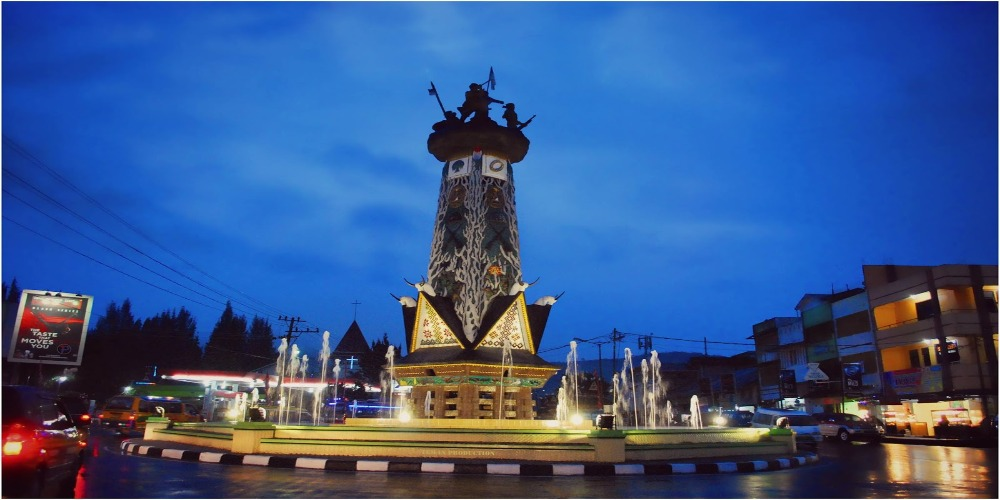
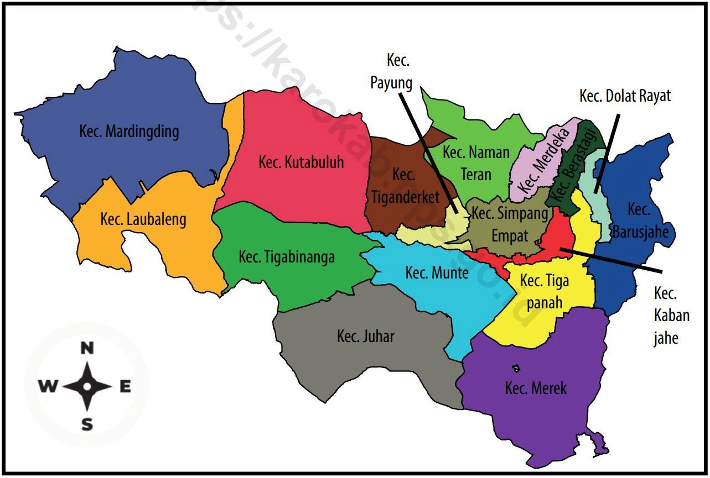

Sejarah

Suku karo adalah suku bangsa yang mendiami tanah Karo tentunya dan beberapa daerah lain disekitarnya seperti di Karo Baluren ( Kabupaten Dairi ), Simalungun, Deli Hulu ( Kabupaten Deli Serdang ), Langkat, dan beberapa daerah lainnya yang penduduk bersuku Karo tapi tidak terkonsentrasi secara massal diwilayahnya. Suku Karo tidak mau disebut sebagai suku Batak karena menurut mereka asal-usul diri mereka bukanlah dari keturunan Si Raja Batak, melainkan keturunan seorang panglima perang bernama Karo yang berasal dari kerajaan Cola di India selatan. Dikisahkan dulu ada seorang raja yang membawa rombongan besar termasuk sang panglima dan putri raja bernama Miansari untuk mencari wilayah baru agar wilayah kerajaannya menjadi luas. Rombongan ini berlayar dan menemukan pulau yang subur yang sekarang dikenal sebagai pulau Penang di Malaysia. Rombongan terus bergerak mencari wilayah yang lebih luas lagi.
Namun diperjalanan terjadi badai besar yang membuat kapal rombongan mereka tercerai berai. Rombongan raja terdampar di pulau lain, dan rombongan panglima beserta Miansari terdampar di pulau yang lebih luas dan subur yang sekarang dikenal sebagai pulau Sumatera. Tempat mereka terdampar sekarang dikenal sebagai daerah Belawan, Medan. Rupanya panglima Karo dan putri Miansari sudah lama saling memendam rasa cinta, hingga mereka sepakat menikah dan disaksikan rombongan yang ikut serta. Setelah menikah mereka terus melanjutkan perjalanan mengikuti aliran sungai menuju pedalaman dan kemudian beristirahat. Daerah tempat peristirahatan pertama mereka sekarang dikenal sebagai daerah Durin Tani yang berada di kecamatan Sibolangit, Kabupaten Deli Serdang. Mereka beristirahat didalam gua yang sekarang dinamakan gua Umang. Karena dianggap belum aman maka mereka mencari tempat lain dengan mengikuti sungai menuju pegunungan dan tiba didaerah yang sekarang dinamakan Sikeben yang masih masuk daerah Sibolangit. Karena ada keinginan mencari tempat tinggal yang indah pemandangannya, maka mereka terus berjalan hingga menemukan daerah yang sekarang bernama Mulawari, Kecamatan Tigapanah, Kabupaten Karo dan mendirikan perkampungan disana. Dengan demikian mereka adalah pendiri tanah Karo.
Geografis

Kabupaten Karo merupakan salah satu kabupaten yang ada di provinsi sumatera utara. Ibukota kabupaten karo adalah kabanjahe, dengan luas sebesar 44,65 km2 . Kecamatan terluas di kabupaten karo adalah kecamatan mardinding dengan persentase luas sebesar 12,56%. Sementara kecamatan terkecil yang ada di kabupaten karo adalah berastagi dengan persentase luas sebesar 1,43%. Wilayah tertinggi di kabupaten karo terletak pada kecamatan naman teran, sedangkan wilayah terendahnya terletak di kecamatan Laubaleng.
Kabupaten Karo berlokasi di dataran tinggi Karo, Pegunungan Bukit Barisan. Terletak sejauh 77 km dari Kota Medan, ibu kota Provinsi Sumatera Utara. Wilayah Kabupaten Karo terletak di dataran tinggi dengan ketinggian antara 600 sampai 1.400 meter di atas permukaan laut. Karena berada di ketinggian tersebut, Tanah Karo Simalem, nama lain dari kabupaten ini mempunyai iklim yang sejuk dengan suhu berkisar antara 16-17°C.
Wisata
Banyak sekali para wisatawan yang rela membeli tiket pesawat dan datang jauh-jauh mengunjungi beberapa tempat di dunia ini yang memiliki tempat wisata yang sangat menakjubkan. Sering juga para wisatawan mengunjungi suatu tempat hanya karena melihat foto-foto yang beredar luas di sosial media. Kabupaten Karo memang dianugrahi tanah yang subur dan alam yang indah. Memiliki pesona alam menakjubkan untuk dijelajahi. Mulai dari pegunungan, perbukitan, hingga danau yang memiliki daya pikat tersendiri.
Bukit Kubu
Berwisata di alam terbuka bersama keluarga adalah hal paling mengasikkan. Bagi pecinta permainan layang-layang tempat ini sangat cocok, dimana angin bertiup cukup kencang, sehingga tidak di perlukan waktu yang lama untuk menerbangkan layangan. Bagi pengunjung yang tidak puas bermain layangan yang di berikan oleh pengelola, dapat membeli layangan berbagai motif disini, Sehingga anda akan terpuaskan bermain layangan disini.
Desa Budaya Lingga
Desa Lingga memiliki bangunan tradisional seperti, rumah adat, jambur, geriten, lesung, sapo page dan museum Karo. Rumah adat Karo biasanya didiami 8 atau 10 kepala keluarga. Bahan bangunan rumah tradisionil yang terancam hilang tergerus alam modernisasi ini terbuat dari kayu bulat, papan, bambu dan beratap ijuk tanpa menggunakan paku yang dikerjakan arsitektur alam leluhur Karo yang sungguh luar biasa.
Danau Lau Kawar
Danau Lau Kawar memiliki luas mencapai 200 Ha, keeksotisan pemandangan objek wisata Karo ini tak kalah indah dan menakjubkan dibandingkan dengan Danau Toba. Berlokasi di bawah kaki Gunung Sinabung, atmosfer di kawasan Danau Lau Kawar ini sangat menyegarkan Dikelilingi rimbunnya pepohonan, buatmu pecinta alam, terdapat Deleng Lancuk atau Bukit Lancuk di sisi kanan objek wisata ini yang terkenal sebagai salah satu spot trekking favorit wisatawan. Selain rimbunnya pepohonan, kamu juga bisa menemukan banyak anggrek hutan yang indah di kawasan ini.